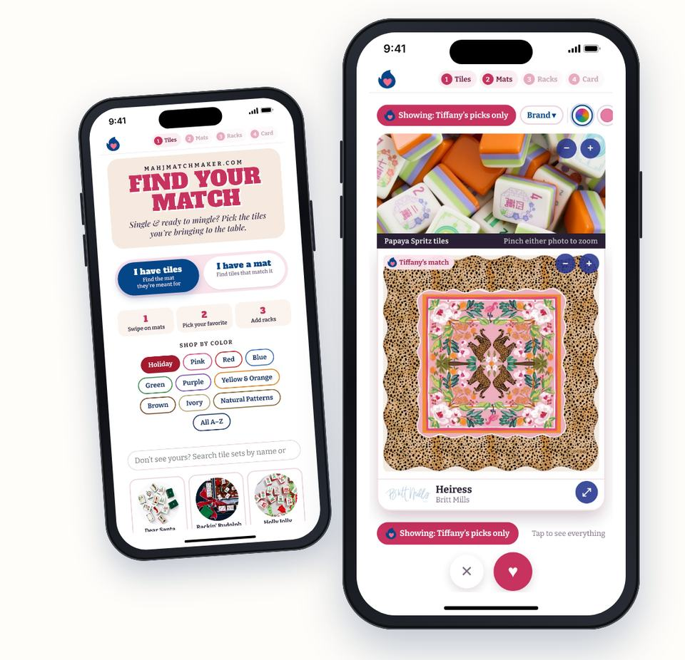
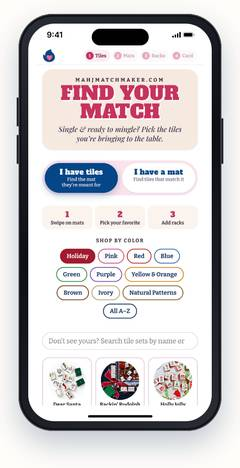
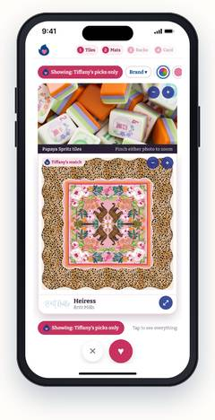
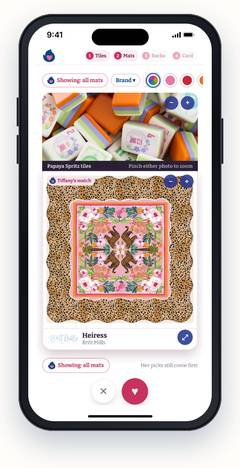
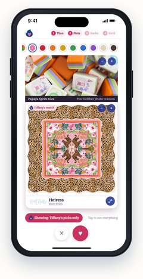
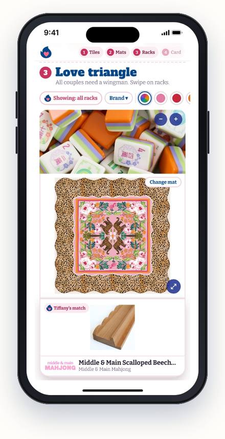
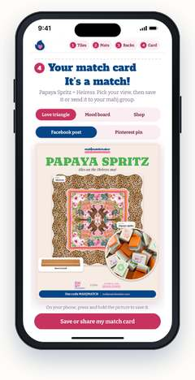

This is a new tool I’m rolling out just for you: Find Your Mat‑ch™. This time I’m stepping out of the matchmaker seat, and it’s your turn to find your match.
My picks are baked right in, so you’re never swiping alone.

Start with the tiles you own, or flip it and start with the mat you already love.

Tap ♥ on the mats you love and ✕ on the ones that aren’t the one.

“Showing: Tiffany’s picks only” means you’re seeing my own matches for your set. Tap it to see every mat, and tap again to bring my picks back.

Tap a color dot to narrow the mats to one color. Tap it again to clear it.

Every couple needs a wingman. Swipe racks the same way, with my rack picks first.

Pick your view, then save it or send it to your mahj group. Every piece is linked.
Hope you love it!
Something look off or have an idea? Tell me here →
Use code MAHJMATCH to save 💕
Happy mat-ching!
xo, Tiffany
Hooking up tiles, mats & racks
[Mailing address: pending from Tiffany] · Unsubscribe (Squarespace adds both to every send)